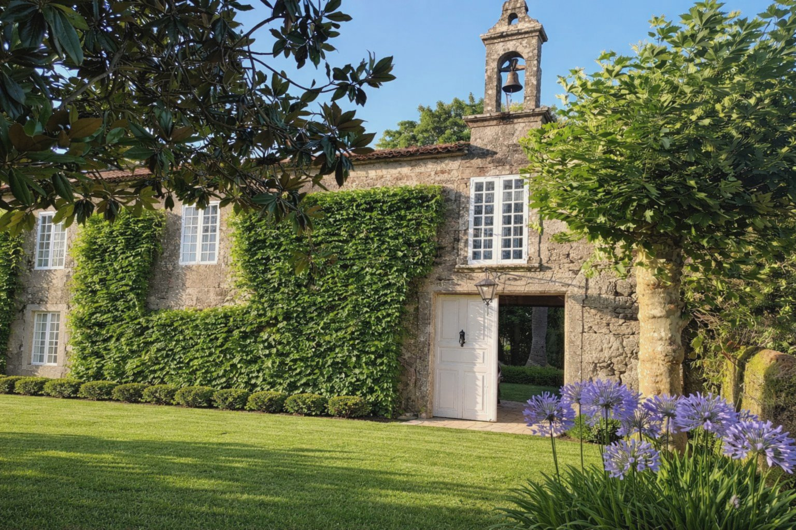

A pazo unlike
any other
Nestled in the Celtic hills of Galicia, the pazo is the noble manor house of this singular corner of Spain — built not to impress nearby city inhabitants, but to exist harmoniously with the surrounding land. This estate, dating to the 17th century, is one of the finest examples of Galician manors of the period: a long granite body draped in centuries of ivy, a private chapel with its original bell tower, heraldic stone fountains, a cobbled inner courtyard, and views that stretch over the valley to the forested hills beyond.
Its stone cross — a cruceiro — still stands at the garden wall, as it has for three hundred years. The magnolias are older than memory. The bell still rings. Now, for the first time, this estate opens its doors to those who seek something beyond the ordinary: a place where history is inescapable but where stories are still being written.